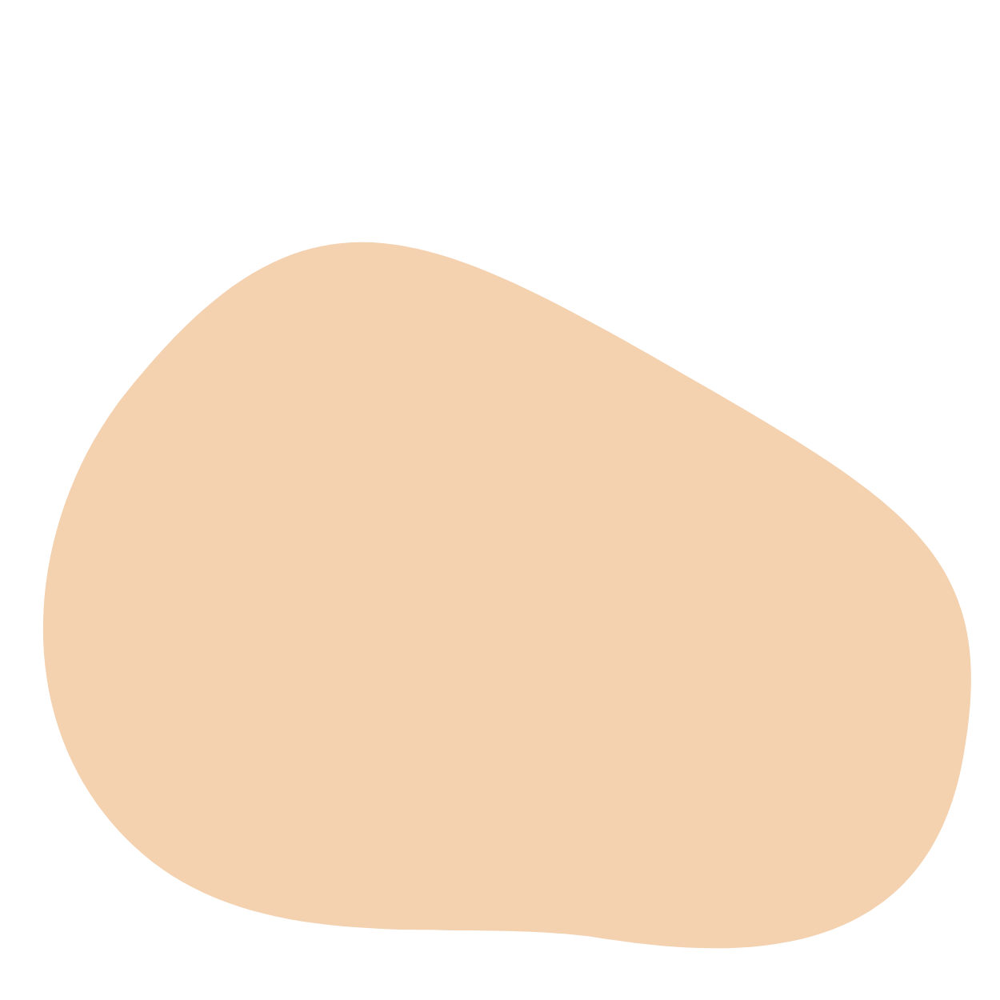
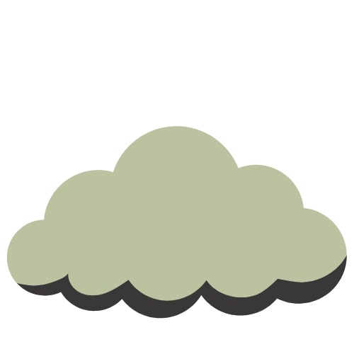

Sarah Barfoot
About Me
I graduated from QUT in 2019 with a Bachelor's Degree in Fine Arts (Creative and Professional Writing) and I'm in the process of obtaining a Diploma in Information Technology (Website Development) at TAFE QLD.
I've always loved creating for the web. On top of designing, creating and maintaining websites, I've also contributed copy and articles for online blogs and magazines, such as RSPCA QLD.
When I'm not developing and creating, I love to play cosy video games, drink matcha lattes and cuddle my cat.